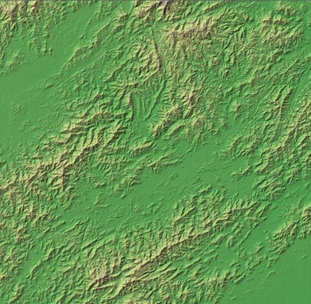

<nz-layout>
  <nz-header>
    <div class="logo">
      
    </div>
    <ul nz-menu nzTheme="dark" nzMode="horizontal" class="header-menu">
      <!-- <li nz-menu-item>nav 1</li> -->
      <li nz-menu-item nzSelected>
        中国铁路分析系统
      </li>
      <!-- <li nz-menu-item>nav 3</li> -->
    </ul>
  </nz-header>
  <nz-content class="outer-content">
    <!-- <nz-breadcrumb>
      <nz-breadcrumb-item>Home</nz-breadcrumb-item>
      <nz-breadcrumb-item>List</nz-breadcrumb-item>
      <nz-breadcrumb-item>App</nz-breadcrumb-item>
    </nz-breadcrumb> -->
    <nz-layout class="inner-layout">
      <nz-sider nzWidth="200px" nzTheme="light">
        <ul nz-menu nzMode="inline" class="sider-menu">
            <li nz-menu-item nzSelected>
              <span>铁路变化图</span>
              <a routerLink="Railwaymap"></a>
            </li>
          <li nz-submenu nzTitle="铁路变化分析" nzIcon="area-chart">
            <ul>
              <li nz-menu-item>
                <span>总增长趋势</span>
                <a routerLink="Analysismap"></a>
              </li>
              <li nz-menu-item>
                <span>客运与货运量</span>
                <a routerLink="Analysischart"></a>
              </li>
            </ul>
          </li>
          <li nz-submenu nzTitle="总结" nzIcon="comment">
            <a routerLink="GDP"></a>
            <!-- <ul>
              <li nz-menu-item>option9</li>
              <li nz-menu-item>option10</li>
              <li nz-menu-item>option11</li>
              <li nz-menu-item>option12</li>
            </ul> -->
          </li>
        </ul>
      </nz-sider>
      <nz-content class="inner-content">
        <router-outlet></router-outlet>
      </nz-content>
    </nz-layout>
    <!-- <nz-footer>Ant Design ©2020 Implement By Angular</nz-footer> -->
  </nz-content>
</nz-layout>